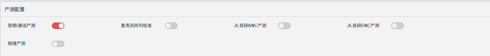
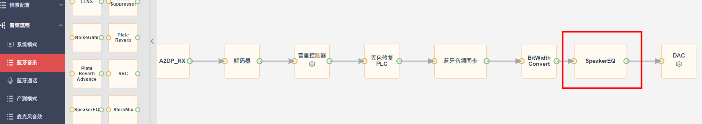
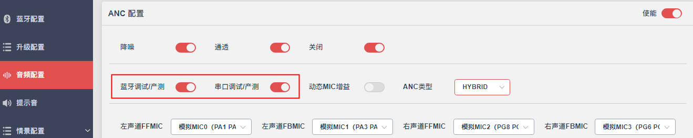
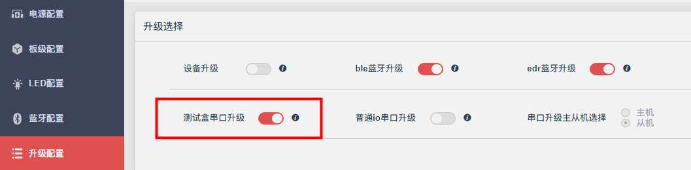
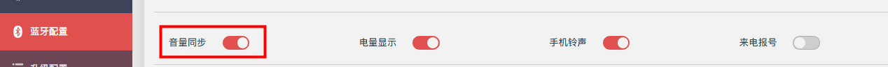
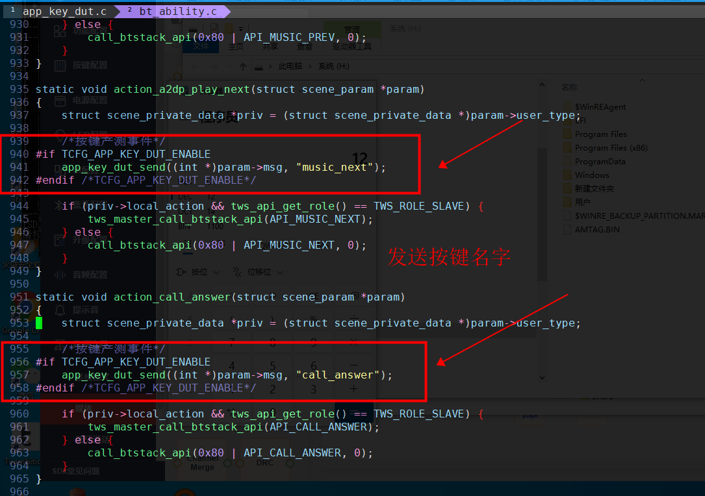

12.10. 产测配置
配合产测设备，在生产过程中对产品进行相关质量检测，以确保产品符合预期的性能和标准。

12.10.1. 通用产测配置
支持市面主流第三方设备生产测试
兆华
美格信
指南测控
12.10.1.1. 音频/通话 产测
音频/通话产测 ：音频配置 -> 产测配置->音频/通话产测
支持通话产测：如测试MIC频响，算法输出频响等，支持第三方设备
蓝牙SPP产测，需要产测设备支持对应指令；支持音频bypass模式：bypass
蓝牙音乐各类音效处理，目前用于SpeakerEQ校准，需要产测设备支持对应指令；
麦克风阵列校准：音频配置 -> 产测配置->麦克风阵列校准
用于校准双麦ENC MIC幅度一致性，需配合
音频/通话产测配置使用，需要产测设备支持对应指令；
12.10.1.2. Speaker EQ 校准

用于校准喇叭频响，可在音频流程->蓝牙音乐，在 DAC节点 之前, 添加SpeakerEQ节点。
12.10.1.3. ANC 调试/产测

蓝牙调试/产测：音频配置 -> ANC配置 -> 蓝牙调试/产测
支持ANC_DESIGNER，第三方设备
蓝牙SPP调试/产测；
串口调试/产测：音频配置 -> ANC配置 -> 串口调试/产测
支持ANC_DESIGNER，第三方设备
产测串口板调试/产测；
12.10.2. 自研产测配置
JL自主研发的产测流程，需配合JL产测串口板以及JL π-HAT 上位机。已支持功能如下
SPK测试及校准（Speaker EQ）
ANC测试及校准
ENC测试及校准(麦克风阵列校准)
按键产测
12.10.2.1. 自研产测必选配置
音频配置 -> ANC配置 -> 串口调试/产测：用于基础通讯；
音频配置 -> 产测配置 -> 音频/通话产测：用于部分命令交互；

升级配置 -> 升级选择 -> 测试盒串口升级：复用测试盒相关命令交互；
蓝牙配置 -> 经典蓝牙 -> 音量同步：用于控制小机音量；

注意当前自研产测仅支持有ANC功能的方案，后续更新会解除该绑定
12.10.2.2. ENC产测
JL自研ENC产测 ：音频配置 -> 产测配置 -> JL自研ENC产测
ANC MIC：支持MIC频响测试；
双/三麦通话：支持测试MIC频响，以及通话算法输出；
单麦通话：仅支持测MIC频响，暂不支持测试通话算法；
麦克风阵列校准：音频配置 -> 产测配置 -> 麦克风阵列校准
用于校准麦克风与金机的幅度差，支持单/双/三麦校准
12.10.2.3. ANC产测
JL自研ANC产测 ：音频配置 -> 产测配置 -> JL自研ANC产测
支持FF/FB/HYBRID ANC性能测试及校准，目前与Speaker EQ绑定测试；
HYBIRD/FB方案需要开启此功能，FF方案配置自研产测必选配置即可。
AC700N仅支持FF方案；
JL701N支持FF、FB、HYBRID方案；
12.10.2.4. 按键产测
按键产测 ：音频配置 -> 产测配置 -> 按键产测
检测逻辑：通过获取小机的按键表，获取产品按键信息。其次检测待测样机的按键事件响应来判断，按键功能是否正常；
12.10.2.4.1. 程序自定义产测按键值和按键表方法
配置文件路径：apps/earphone/tools/app_key_dut.c
1、在按键表里面定义产测的按键值
常规方案
用户针对产品的按键事件配置按键表（可增加 or 删除）
注意：按键名字字符串不能超过14个字符
//按键表
const static key_mpt_self_list_t key_event_list[] = {
{0x00, "music_pp"},
{0x01, "music_prev"},
{0x02, "music_next"},
{0x03, "call_answer"},
{0x04, "call_hangup"},
{0x05, "InLowLatency"},
{0x06, "OutLowLatency"},
{0x07, "open_siri"},
{0x08, "close_siri"},
{0x09, "vol_up"},
{0x0A, "vol_down"},
{0x0B, "anc_on"},
{0x0C, "anc_off"},
{0x0D, "anc_trans"},
{0x0E, "anc_next"},
{0x0F, "mic_open"},
{0x10, "mic_close"},
{0x11, "ChangerUncle"},
{0x12, "ChangerGoddess"},
{0x13, "spatial_eff"},
{0x14, "spk_char"},
{0x15, "wat_click"},
{0x16, "wind_det"},
{0x17, "anc_adap"},
//用户可在此继续扩展其他按键 （添加产测按键值和按键名字）
};
TWS左右耳独立按键表
需使能 KEY_DUT_TWS_SEPARATE_LEFT_AND_RIGHT 宏定义，并且按照常规方案的规则完善右耳的按键表。
//左右按键表使能：用于TWS左右耳UI不同的情况
#define KEY_DUT_TWS_SEPARATE_LEFT_AND_RIGHT 1
//按键表-TWS左耳
const static key_mpt_self_list_t key_event_list[] = {
...
}
//按键表-TWS右耳
const static key_mpt_self_list_t key_event_list_R[] = {
/* {0x00, "music_pp"}, */
//用户需完善右耳按键表
};
2、在对应的按键事件响应的地方发送按键值的名字字符串
函数接口
/*
*********************************************************************
* app_key_dut_send
* Description: (SDK标准情景配置流程)发送按键事件到key dut
* Arguments : msg 判断是否为按键触发;
* 传param->msg, 可参考audio_ability.c调用方式
key_name 按键事件名称，需与key_event_list 一一对应
* Return : 0 成功 其他 失败
*********************************************************************
*/
int app_key_dut_send(int *msg, char *key_name);
/*
*********************************************************************
* user_app_key_dut_send
* Description: (用户自定义)发送按键事件到key dut
key_name 按键事件名称，需与key_event_list 一一对应
* Return : 0 成功 其他 失败
* Note : 需确保是按键触发才调用此API !!!
*********************************************************************
*/
int app_key_dut_user_send(char *key_name);
使用方法
标准SDK情景配置流程 
注意：发送的按键字符串需要和按键表里面的字符串保持一致，按键名字字符串不能超过14个字符用户自定义
在按键触发的事件中，调用int app_key_dut_user_send(char *key_name)接口